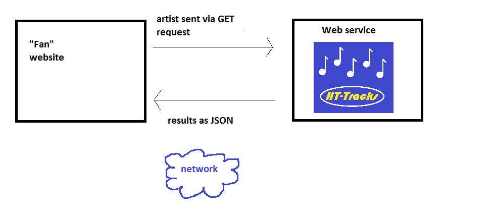

So far, we have looked at JSON web services. In this topic we will be looking at how we can connect to a remote web service (provided by someone else) from our own website. A real-world example of this might be, as we have seen a tourist information site contacting a weather web service, parsing the JSON returned and integrating the data in its own website.
The scenario we will be using will involve developing "fan" website for a particular artist. Rather than storing information about that artist's songs itself, it would like to use our HT-Tracks JSON web service (from last week) to list all the songs by that artist. Hopefully you have created this fan site yourself, in your own time!
There are two questions we need to ask here:
Programming languages typically feature a library which allows you to connect to a remote server over the network from a client application. Such a client application might be an Android app making connections to a remote server, or alternatively a server-side script running on a given server which wishes to connect to another server.
cURL is one such library used to connect to remote servers, and is the standard way of communicating with a server from PHP. Here is a commented example. Note that the URL to connect to does not need to be a web service; it can be a standard, HTML-generating PHP script or even a static HTML page (as used in 'screen-scraping' techniques).
// Initialise the cURL connection $connection = curl_init(); // Specify the URL to connect to - this can be PHP, HTML or anything else! curl_setopt($connection, CURLOPT_URL, "http://remoteserver/script.php"); // This option ensures that the HTTP response is *returned* from curl_exec(), // (see below) rather than being output to screen. curl_setopt($connection,CURLOPT_RETURNTRANSFER,1); // Do not include the HTTP header in the response. curl_setopt($connection,CURLOPT_HEADER, 0); // Actually connect to the remote URL. The response is // returned from curl_exec() and placed in $response. $response = curl_exec($connection); // Close the connection. curl_close($connection); // Echo the response back from the server (for illustration purposes) echo $response;This code makes a connection to a given remote server (here, http://remoteserver/script.php) and the response sent back is stored in $response. If the remote script sends back JSON, $response will contain JSON. If the remote script sends back an HTML page, $response will contain HTML. This is standard code that can be copied and pasted every time you want to make a remote connection just change the URL.
You are going to connect your fan site (which you should have done in your own time, before the class; if you haven't, you need to create the fansite now!) to your Slim web service from last time. The fan site will ask the web service for all songs by that artist. The web service will return this data to the fan site as JSON. This is shown below:

To do this, add some cURL code to your fan site to connect to your Slim web service from last time, passing the artist in the URL. https://edward2.solent.ac.uk, in your cURL connection. Also note that any spaces in the artist name need to be encoded as plus signs (e.g. The+Beatles) as otherwise the space will be treated as marking the end of the artist name.
Upload your fansite to Edward2 and try it out (note: in the real world, the fansite and web service would be on SEPARATE servers, but we only have one server available so both will be on Edward2) What happens?
...you probably don't like what you get, as you just see the raw JSON from the web service. This isn't going to be very friendly for your end-users! So what we need to do next is to parse (interpret) the JSON. and display the data in a user-friendly way for our end-users.
JSON parsing from PHP is straightforward. You use json_decode(), which performs the opposite function to json_encode(). It loads JSON into memory as PHP arrays, or PHP associative arrays.
Here is an example of using json_decode, where $json is the JSON we wish to parse:
$data = json_decode($json, true);The second parameter, "true", loads the JSON into a PHP associative array; otherwise it will load it into a PHP object, as shown below.
Here is a full working example of using json_decode() to parse some JSON:
$json = '[
{"name" : "Barack Obama", "age" : 55, "nationality" : "US", "job": "Former President"},
{"name" : "Hillary Clinton", "age" : 68, "nationality" : "US",
"job": "Presidential candidate 2016" }
]';
$data = json_decode($json, true);
for($i=0; $i<count($data); $i++)
{
echo "Name " . $data[$i]["name"] . " " .
"Age " . $data[$i]["age"] . " " .
"Nationality " . $data[$i]["nationality"] . " " .
"Job " . $data[$i]["job"] . "<br/>";
}
This example stores some JSON (an array of JSON objects representing
US presidents/presidential candidates)
in a variable $json and then converts it to a PHP array of associative arrays, one associative array per person.
If you are familiar with object-oriented PHP: note the true as the second parameter to json_decode. This indicates we are converting the JSON to associative arrays. If we missed out the true the JSON would be converted into an array of PHP objects instead, so we would need code like this to read the data:
$json = '[
{"name" : "Barack Obama", "age" : 55, "nationality" : "US", "job": "Former President"},
{"name" : "Hillary Clinton", "age" : 68, "nationality" : "US",
"job": "Presidential candidate 2016" }
]';
$data = json_decode($json);
for($i=0; $i<count($data); $i++)
{
echo "Name " . $data[$i]->name . " " .
"Age " . $data[$i]->age . " " .
"Nationality " . $data[$i]->nationality . " " .
"Job " . $data[$i]->job . "<br/>";
}
Change your fansite code so that the JSON is parsed, and the songs by your chosen artist displayed on your fansite in a user-friendly way.